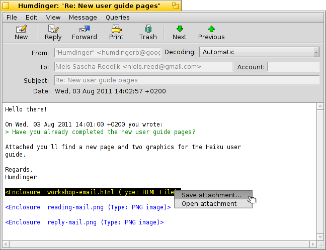
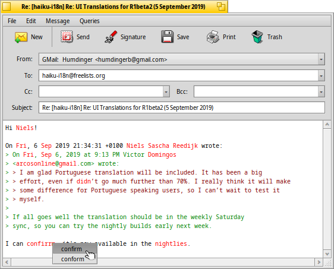

日本語
日本語 Français
Français Deutsch
Deutsch Italiano
Italiano Русский
Русский Español
Español Svenska
Svenska Українська
Українська 中文 ［中文］
中文 ［中文］ Português
Português Suomi
Suomi Slovenčina
Slovenčina English
English| インデックス |
| メッセージを読む 新規メッセージの作成 メールの設定 |
 Mail (メール)
Mail (メール)
| Deskbar メニュー： | ||
| 場所： | /boot/system/apps/メール | |
| 設定ファイル： | ~/config/settings/メール/ ~/config/settings/メール/Menu Links/ - ここに置かれたものはメールボックスのコンテキストメニューに表示されます。 ~/config/settings/メール/signatures/ - 署名の保存場所 ~/config/settings/メール/status/ - カスタムステータスの保存場所 |
MailはHaikuのe-メールのデフォルトビューアまたは編集ソフトです。メールの送受信はメールサービスによって行われ、Mailとは全く関係ありません。送受信の設定はメール 設定で変更できます。
このページはMailアプリケーションの概要です。Haikuとメールの詳細は、 メールの管理のワークショップを参照してください。
 メッセージを読む
メッセージを読む
Mailで電子メールを開くにはメッセージをダブルクリックしてください。インターフェースは非常に簡単です：
上にはメニューと任意のツールバーがあり、メッセージの属性 (宛先、差出人、件名、日付)と内容がその下にあります。メッセージが変な文字で表示されたり何も表示されない場合は、ポップアップメニューから を変更してください。
メッセージに添付ファイルがある場合は、メッセージの最後に表示されます。添付ファイルを右クリックすると、 や メニューが表示されます。またドラッグ & ドロップでデスクトップやTrackerウィンドウに直接保存することができます。
メニューとツールバーはほとんど一目瞭然なので、ここでは主な動作に集中します。
ファイル
新着メッセージのウィンドウを閉じると、そのステータスは"新着"から"朗読"に変わります。ですが サブメニューから他のステータスにすることも可能です。そこでは、 でカスタムステータスを作成することができ、 ~/config/settings/メール/status/に保存されます。
編集
ここではMailの (下を参照) を開くことができ、 メール設定パネルを開く のショートカットもあります。
表示
たいていの場合次の二つはめったに必要ありません：
| ALT H | メッセージのヘッダーをすべて表示します。例えば、メッセージの経路が知りたいときに使えます。 | ||
| メッセージを生の状態で表示します。例えば、制御文字やMailの引用部分やURLの着色は表示されません。 |
メッセージ
メッセージの返信方法は説明が必要かもしれません。
| ALT R | あなたにメールを送ったサーバーへの標準の返信です。 注：メーリングリストの場合、通常は差出人だけではなく、メーリングリストに返信します。 | ||
| OPT ALT R | 一方でこの方法は”差出人：”に表示されている差出人のみに返信します。 | ||
| SHIFT ALT R | 元の差出人とほかの受信者（CC）に返信します。 |
、とするアイテムはまた一目瞭然です。
メールをTrackerかクエリから開けた場合、 と はリストの前/次のメールになります。
はヘッダーのメールアドレスすべてを回収し、メールの内容をサブメニューに保存します。 メールアドレスを選択すると連絡情報を保存するために People アプリケーションを開きます。
クエリ
この機能はまだ動作しませんが、現在開いているメッセージに関係するメッセージを表示するためのクエリ（同じ受信者や同じ件名）を表示するはずです。
新規メッセージの作成
メニューまたはツールバーからアイコンを選択させることで新規メッセージを作成できます。 また、Mailアプリケーションを起動するか、Deskbarのメールボックスアイコンのコンテキストメニューから を選択することで新規メッセージを作成できます。

このウィンドウはメールを読むときのウィンドウに似ています。メニューとツールバーは少し違っていて、テキストボックスには受信者のメールアドレスや件名などを入力しなければいけません。
は "カーボンコピー" の略で、送信したメールのコピーをリストのメールアドレスにも送ることができます。
Ccと"宛先："にメールアドレスを入力する違いは、Ccのアドレスは直接送信しないので、CCのアドレスからは返信は期待していないと言っていることです。
は "blind carbon copy" のことで、”Cc”と同じことをしますが、受信者のメールアドレスを隠します。
コンマでメールアドレスを分離することで複数の受信者を入力できます。、 と はポップアップメニューです。あなたのシステムのクエリでPeople ファイルが探せるすべてのメールアドレスの情報を持っています。 ”グループ”属性はそれをサブメニューに類別するときに使われます。
次はメニューの面白い機能に注目します。
ファイル
でメールを保存して後で再開することができます。 サブメニューに”下書き”のステータスのメールがすべて表示され、一覧からメールを選択すると再開できます。
編集
と またはそれぞれのショートカット ALT ← / → を使って > シンボルの数を調整して引用のレベルを変更できます。引用したいテキストを選択して、引用メニューを開いてください。
は現在英語のテキストのみ間違った文字や不明な文字を赤い斜体で表示してくれます。赤い文字を右クリックすると、コンテキストメニューが開き、文字を修正するか辞書にすることができます。
さらに、Mailの (下を参照) を開くアイテムもあり、でメール 設定パネルを開くショートカットもあります。
メッセージ
で事前に定義されたテキストをメールの最後に追加できます。 サブメニューから署名を特定するか、な署名を使用できます。

You create new or edit existing signatures with , which will open a window where you enter the text itself and the title of your new sig. There, in the menu, you find items to a specific signature or or the currently loaded one, Signatures should be saved in ~/config/settings/Mail/signatures.
と を使って添付ファイルを追加/削除することができます。また、Trackerウィンドウからドラッグ & ドロップでファイルを追加することもできます。ただし、ファイルをヘッダー部分(上にある宛先、差出人、件名)にドロップしてください。でないと、ファイルがテキストファイルだった場合、メールの本文に貼り付けされてしまいます。

添付ファイルはヘッダーセクションの下にリストされています。コンテキストメニューを開くかファイルを選択して DEL を押すことで削除できます。
クエリ
この機能はまだ動作しませんが、現在開いているメッセージに関係するメッセージを表示するためのクエリ（同じ受信者や同じ件名）を表示するはずです。
メールの設定

Mailの設定は二部分に分かれています：
インターフェースの設定
| アイコンにラベルを表示、またはツールバーを隠すオプション | ||
| メッセージのテキストに使用するフォントを設定 | ||
| フォントサイズの設定 | ||
| 引用部分をレベル別に着色 | ||
| 起動時にスペルチェックをオン/オフにする | ||
| ”新着”ステータスのメールを閉じた後、ステータスを自動的に”既読”に変更する |
メールの設定
| 複数のメールアカウントがある場合、新規メッセージを作成するとき使用するアカウントを指定します。 | ||
| メールに返信するとき、上のポップアップメニューのまたはでどのアカウントからメールを返信するかを指定できます。 | ||
| これは引用されたテキストの前に挿入されます。
テキストフィールドの横のポップアップメニューから様々な変数を使用することができます。 例: "こんにちは %n!\n\n %d にあなたは書きました：\n" はこうなります： こんにちは Dr. Hawking! Mon, 18 Jan 1998 02:55:16 +0800 あなたは書きました： > so thanks again for the inspiration concerning the cosmological constant. > ...and the rest of the quoted text following... | ||
| メールの終わりに自動的に署名を追加します。 | ||
| 標準文字コードを設定します。 | ||
| もし作成したメールの中にエンコードできない文字が含まれていた時に警告を受けるかどうか設定できます。警告によって文字コードを変更することができます。文字コードを変更しないと、エンコードできない文字は四角形のシンボルに置き換えられます。 | ||
| 76文字ごとに改行し、メールを見やすくします。 | ||
| 添付ファイルと一緒にBFS属性を送るかどうか選択できます。これは他のHaikuユーザーにとっては便利で、”完全な”ファイル（アーティスト、アルバム、MP3ファイルのタイトル属性）を送信できますが、Haikuを使用していないユーザーには混乱（または疑い）を起こす可能性があり、追加された”BeOS属性”が何なのか知りたがるかもしれません。 添付ファイルにBFS属性をつけないで送信することを選択した場合、送信前にファイルをzip圧縮することを思い出してください、さもなければ属性は取りさられてしまうでしょう。 |